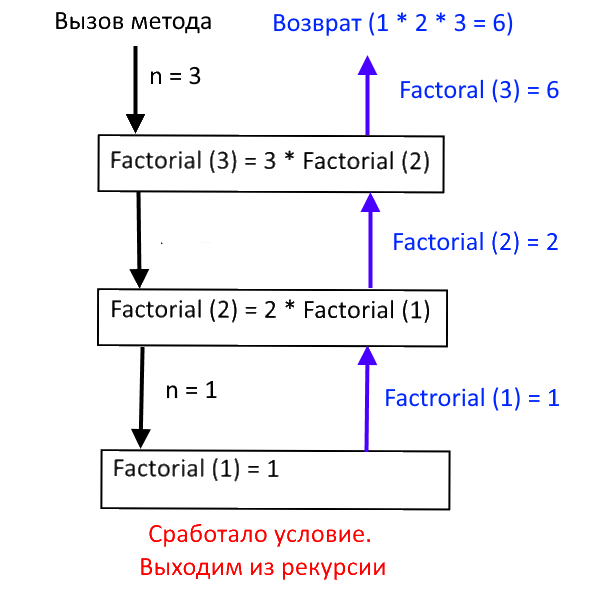

Рекурсивные методы
Содержание
Рекурсивный метод — это метод, который вызывает сам себя. Также, в литературе вы можете встретить понятие «рекурсивная функция». Применительно к языку программирования C# эти два понятия равнозначны. Использование рекурсии позволяет сократить исходный код программы и, иногда, сделать его более понятным.
Вычисление факториала числа — это, видимо, самая популярная задача, решаемая практически всеми студентами на всевозможных языках программирования. Из курса математики мы знаем, что:
- факториал 0 равен 1
- факториал 1 равен 1
- факториал отрицательного числа не существует
- факториал положительного числа, например, 5 будет равен 1*2*3*4*5 = 120 и записывается как 5! = 1*2*3*4*5 = 120
Чтобы написать программу, вычисляющую факториал мы можем использовать обычные циклы, а можем написать свой рекурсивный метод:
static int Factorial(int n)
{
if ((n == 0)||(n==1))
return 1;
return n * Factorial(n - 1);
}
и, затем, вызвать этот метод в своей программе, например, так:
static void Main(string[] args)
{
Console.WriteLine(Factorial(5));
}
Что необходимо знать, чтобы рекурсивный метод работал. Во-первых, рекурсивный метод обязательно должен содержать в себе условие выхода из метода. В примере с факториалом — это условие if:
if ((n == 0)||(n==1)) return 1;
как только n станер равной 1 или в метод передадут 0, то работа метода завершается — срабатывает оператор return. Во-вторых, исходя из определения рекурсивного метода, где-то в методе должен быть вызов самого себя. В нашем случае, вызов осуществляется в этой строке:
return n * Factorial(n - 1);

На каждом шаге выполнения метода до достижения условия выхода из рекурсии в стеке создается запись о вычислении. Как только достигается условие выхода, записи возвращаются из стека и производится окончательное вычисление значения метода. Проверить это можно, запустив приложение и установив точку останова на вызове метода Factorial.
Изучая материалы по рекурсивным методам, можно обратить внимание, что практически всегда рассматриваются достоинства таких методов (краткость, легкость восприятия кода и т.д.) и, при этом, достаточно редко акцентируется внимание на недостатках, о которых кто бы и что не говорил, стоит помнить.
Рекурсивные методы тяжелее проверять на корректность вычислений, чем обычные методы, например, с циклами. При использовании рекурсии нередко приходится отслеживать и то, что попадает в стек и то, что, в итоге возвращается из стека.
Попадание в бесконечную рекурсию и переполнение стека
Как было указано выше, одним из главнейших условий при разработке рекурсивного метода — это наличие условия выхода из метода (или, как ещё говорят — базового сценария). Если рекурсивный метод достаточно большой, то можно упустить этот момент и тогда метод будет вызывать себя до тех пор, пока не произойдет переполнение стека. Например, уберем из нашего метода условие if и попробуем запустить программу. Достаточно быстро вы увидите в консоли вместо решения ошибку вот такого плана:
Stack overflow.
Repeat 19280 times:
Обычно, на выполнение рекурсивного метода затрачивается большее количество времени, чем на нерекурсивный метод. Например, перепишем вычисление факториала с использованием обычного цикла for:
static long Factorial_2(int n)
{
if ((n == 0) || (n == 1))
return 1;
long result = 1;
for (int i = 2; i < n+1; i++)
result *= i;
return result;
}
и теперь сравним скорость работы этих методов, например, на вычислении факториала 20 (результат должен быть равен 2 432 902 008 176 640 000). Ниже представлен результат измерения времени в тактах:
Рекурсия: 71548
Цикл: 1964
Даже на таком простом примере видно, что метод вычисления факториала без рекурсии справился с задачей на порядок быстрее.
Рекурсивные методы — это методы, вызывающие сами себя. Рекурсия, в ряде случаев, позволяет сделать ваш код более элегантным, но, при этом, обладает рядом недостатков, в том числе: более медленная скорость выполнения, сложность отладки и возможность получения бесконечной рекурсии. Рекурсивные методы стоит использовать только в том случае, если это действительно необходимо. Там, где есть возможность обойтись без рекурсии — лучше использовать обычные циклы и условные операторы.